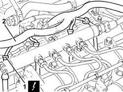
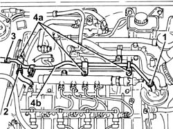
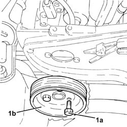
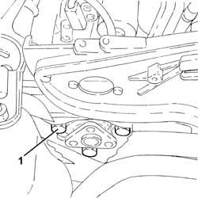
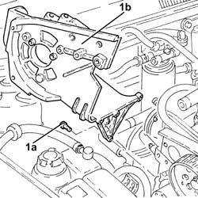
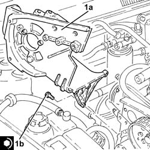
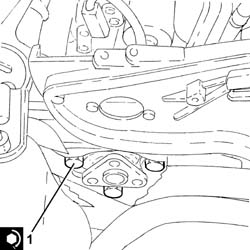
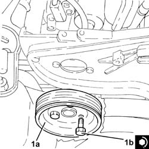

1060E40 SUPPLEMENTARY PRESSURE PUMP - R R
- Path
- Procedures > 10 ENGINE UNIT > 1060 DIESEL INJECTION SYSTEM > 1060E DIESEL PRESSURE PUMP > 1060E40 SUPPLEMENTARY PRESSURE PUMP - R R
- Kind
- repair procedure (removal / refitting; the operation number is the code)
- Applies to
- engines: 1.9 JTD 16V; all production periods
- Interactive page
- https://sloeber94.github.io/elrnDB-aGt/en/#/125001035
Applies to: engines: 1.9 JTD 16V; all production periods
 Removing
Removing
 Refitting
RefittingPosition the vehicle on the ramp
Ensure that the ignition key is in the OFF position, then disconnect the negative battery terminal (-).
Name | Connector | |
|---|---|---|
- | Battery | See A1B BATTERY ( BATTERY NEGATIVE ) |
Proceed with removal
Op. 1008C10 POWER UNIT UPPER REACTION LINK R R
Proceed with removal
Proceed with removal
Op. 1060G80 DS ELECTRIC INJECTION CONTROL UNIT - R R
Proceed with removal
Proceed with removal
Op. 4450B04 RIGHT FRONT WHEEL R R
Proceed with removal
Proceed with removal
Op. 7055B54 UNDER-ENGINE GUARD - R R
Proceed with removal
Proceed with removal
Op. 7055B91 RIGHT FRONT WHEEL ARCH LINER - R.R.
Proceed with removal
Proceed with removal
Op. 1092G10 SINGLE ENGINE BELT R R
1. Disconnect the electrical connections from the heater plugs.
2. Release the electrical wiring from the bands and move it.
Op. 1092A10 CRANKSHAFT SERVICES PULLEY - R.R.
Op. 1092G20 ENGINE COMPONENT SINGLE BELT FIXED TENSIONER - ONE - R + R
Op. 1032D12 TIMING SYSTEM PROTECTIVE COVER(S) - R + R
Op. 1032B10 TOOTHED TIMING BELT - R + R FOR TIMING ADJUSTMENT OR REPLACEMENT
Op. 1060E10 PRESSURE PUMP - R R
Name | Connector | |
|---|---|---|
1 | Heater plug | See A40 HEATER PLUGS (CYL. 1) |

Applies to: engines: 1.9 JTD 16V; all production periods
1. Loosen the band and disconnect the coolant return pipe from the engine coolant reservoir, thermostat side.
2. Loosen the band and disconnect the coolant outlet pipe from the cylinder head, engine coolant return pipe to the coolant reservoir side.
3. Loosen the band and disconnect the flexible coolant return pipe from the rigid coolant return pipe to the engine coolant reservoir.
4. Undo the bolts 42a) and remove hose (4b) carrying coolant to the coolant supply reservoir.

Applies to: engines: 1.9 JTD 16V; all production periods
1. Undo the bolts (1a) and remove the power steering pump drive pulley (1b).

Applies to: engines: 1.9 JTD 16V; all production periods
1. Undo the bolts securing the power steering pump to its mounting.

Applies to: engines: 1.9 JTD 16V; all production periods
Remove the guide tube complete with engine oil dipstick.
1. Undo the bolts (1a) and remove the pressure pump mounting (1b).

Applies to: engines: 1.9 JTD 16V; all production periods
Refitting
Removing1. Place the pressure pump mounting (1a) back in its housing and fix it tightening the bolts (1b) to the recommended torque.
 | Fastening | Component | Ø | Value (daNm) |
|---|---|---|---|---|
1b | Bolt | INJECTION PRESSURE PUMP MOUNT | M8 | (Engine crankcase side) 2.3 ÷ 2.8 |

Applies to: engines: 1.9 JTD 16V; all production periods
Refit the guide tube and engine oil dipstick.
1. Place the power assisted steering pump back in its housing and fix it tightening the bolts to the recommended torque.
| Fastening | Component | Ø | Value (daNm) |
|---|---|---|---|---|
1 | Bolt | POWER STEERING PUMP | M8 | (Support side) 2.3 ÷ 2.8 |

Applies to: engines: 1.9 JTD 16V; all production periods
1. Place the power assisted steering pump pulley (1a) back in its housing and fix it tightening the bolts (1b) to the recommended torque.
| Fastening | Component | Ø | Value (daNm) |
|---|---|---|---|---|
1b | Bolt | POWER STEERING PUMP DRIVE PULLEY | M8 | (Power assisted steering pump side) 2.3 ÷ 2.8 |

Applies to: engines: 1.9 JTD 16V; all production periods
Place the coolant return pipe to the engine cooling system reservoir back in its housing and fix it using the bolts.
Connect the flexible pipe to the coolant return pipe to the engine coolant reservoir and tighten the band.
Connect the coolant oulet pipe from the cylinder head, engine coolant return pipe to the supply reservoir side and tighten the band.
Connect the engine coolant return pipe to the supply reservoir, thermostat side and tighten the band.
Place the electrical wiring back in its seating and fix it to the bands.
Connect the electrical connections to the heater plugs.
Proceed with refitting
Op. 1060E10 PRESSURE PUMP - R R.
Proceed with refitting
Op. 1032B10 TOOTHED TIMING BELT - R + R FOR TIMING ADJUSTMENT OR REPLACEMENT.
Proceed with refitting
Op. 1032D12 TIMING SYSTEM PROTECTIVE COVER(S) - R + R.
Proceed with refitting
Op. 1092G20 ENGINE COMPONENT SINGLE BELT FIXED TENSIONER - ONE - R + R.
Proceed with refitting
Op. 1092A10 CRANKSHAFT SERVICES PULLEY - R.R..
Proceed with refitting
Op. 1092G10 SINGLE ENGINE BELT R R.
Proceed with refitting
Op. 7055B91 RIGHT FRONT WHEEL ARCH LINER - R.R..
Proceed with refitting
Op. 7055B54 UNDER-ENGINE GUARD - R R.
Proceed with refitting
Op. 4450B04 RIGHT FRONT WHEEL R R.
Proceed with refitting
Op. 1060G80 DS ELECTRIC INJECTION CONTROL UNIT - R R.
Proceed with refitting
Op. 1008C10 POWER UNIT UPPER REACTION LINK R R.
Connect the negative (-) battery terminal
Remove the car from the ramps.
Topics linked from this page (11)
- 1008C10 POWER UNIT UPPER REACTION LINK R R
- 1032B10 TOOTHED TIMING BELT - R + R FOR TIMING ADJUSTMENT OR REPLACEMENT
- 1032D12 TIMING SYSTEM PROTECTIVE COVER(S) - R + R
- 1060E10 PRESSURE PUMP - R R
- 1060G80 DS ELECTRIC INJECTION CONTROL UNIT - R R
- 1092A10 CRANKSHAFT SERVICES PULLEY - R.R.
- 1092G10 SINGLE ENGINE BELT R R
- 1092G20 ENGINE COMPONENT SINGLE BELT FIXED TENSIONER - ONE - R + R
- 4450B04 RIGHT FRONT WHEEL R R
- 7055B54 UNDER-ENGINE GUARD - R R
- 7055B91 RIGHT FRONT WHEEL ARCH LINER - R.R.